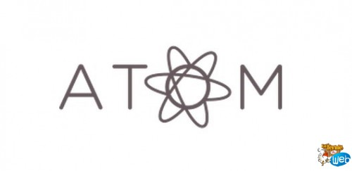
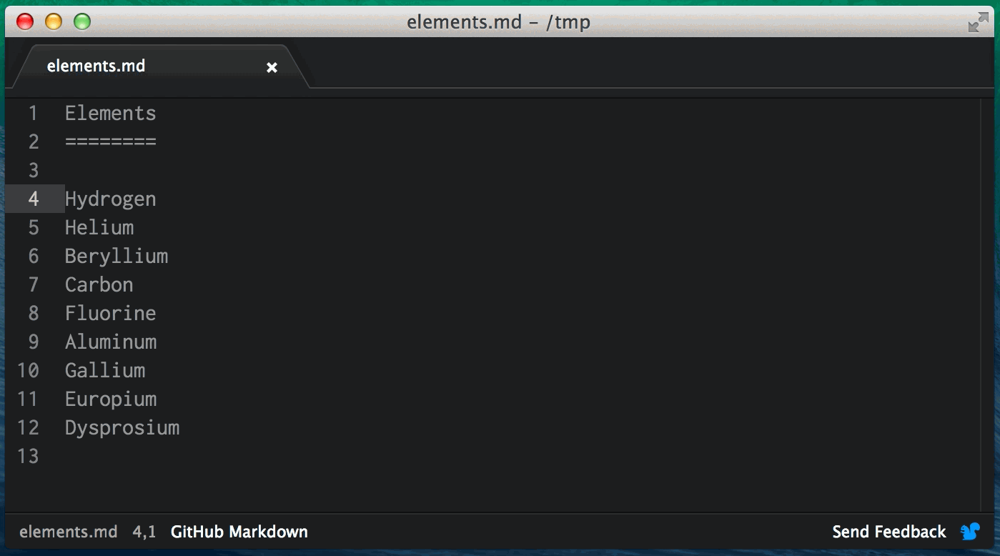
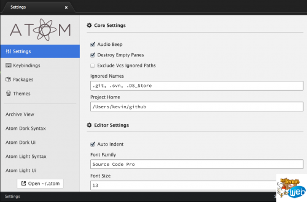
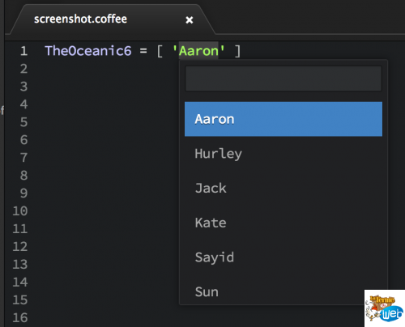
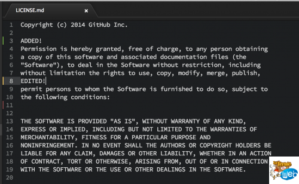
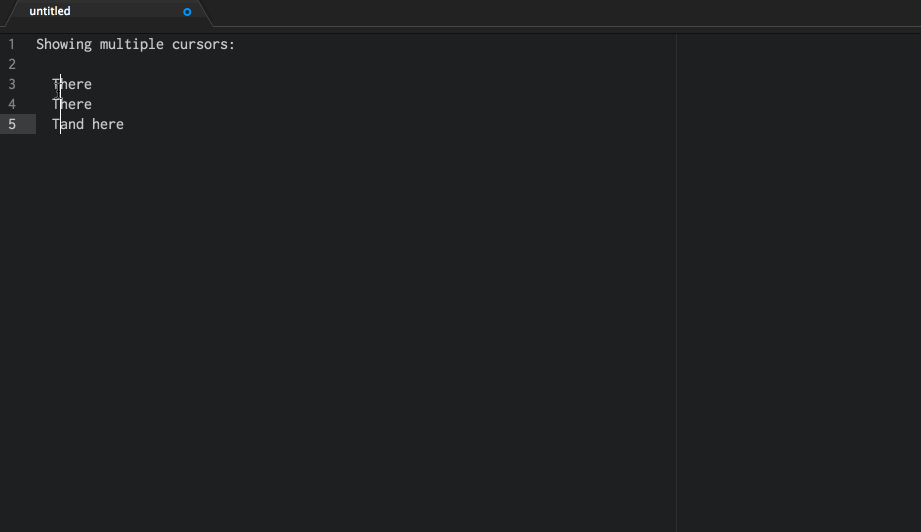
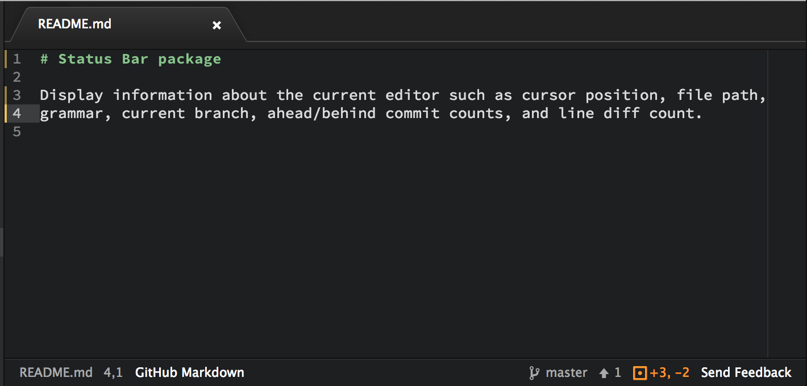
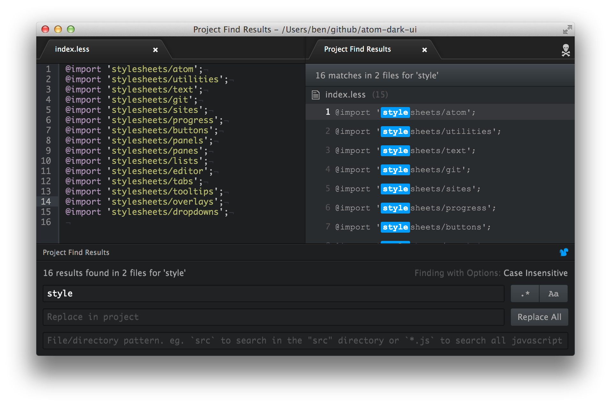

FEV
Atom - Le nouvel IDE créé par Github, alternative à Sublime Text ?
Publié le 27/02/14 à 09h01 par DJoAtom est un IDE dédié aux développeurs créé par Github et qui s'annonce comme un concurrent de poids face à Sublime Text.

Cela fait quelques temps qu'on en entend des rumeurs sur un probable IDE réalisé par Github. Elles étaients bien fondées ! Github vient de sortir en beta publique son propre IDE.
Dédié aux développeurs de tout type de langage, cet IDE a été créé pour être encore plus personnalisable, configurable et "hackable" que les IDE du marché comme SublimeText.
L'IDE s'installe sur n'importe quel OS doté de Node.js. En effet, Atom se base sur un socle Node.js lui donnant de nombreux avantages (Preview live ...).
Quelques fonctionnalités annoncées:
- Gestion avancée du système de fichiers
- Système de recherche poussé à travers les fichiers du projet
- Sélection et curseurs multiples
- Gestion d'onglets multiples
- Snippets
- Code folding
- UI de paramétrage propre et efficace
- Importation des grammars & themes Textmate
Voici quelques images de l'IDE:

Configuration de l'IDE:

Système d'autocomplétion:

Gestion des diffs avec highlight de couleurs dans la gouttière de l'IDE:

Comme sur SublimeText on retrouve la gestion de curseurs multiples:

Une barre de statut avancée avec la branche courante, les fichiers à commit etc.

La recherche avancée dans le système de fichiers:

Bref, un IDE qu'il nous tarde de tester !
De nombreux packages ont déjà été rendus open source, et connaissant la communauté que draine Github, la liste devrait rapidement s'agrandir !
Pour le moment, il est disponible en Beta publique, il faut vous inscrire pour obtenir un accès.
Qu'en pensez-vous ? Prêts à abandonner votre Sublime Text pour Atom ?

merci pour l'information, ça semble effectivement très intéressant.
Cependant, j'ai une question, dont je n'ai pas trouvé la réponse sur le site officiel. Quelle est la licence de cet IDE ? Nous savons qu'il est Open Source, c'est une chose, mais quelle licence ?
Merci d'avance !
Je serai vraiment étonné que cela me fasse partir de Sublime Text, qui après 2 ans d'utilisation parvient encore à me faire m'extasier devant son efficacité, mais bon, A l'époque, j'étais super satisfait de Notepad , et je ne voyait pas l'intérêt de changer, avant d'essayer Sublime Text, alors qui sait ?
Ce serait top mais je pense qu'il sera payant ou comme Sublime Text (au choix payant ou gratuit avec une popup récurrente).
Mais cela n'empêche pas que l'on soit obligé de coder sous netbeans des IDE complet pour développer en équipe et sur des gros projets.
Je pense que Atome devrait être pas mal, et brackets pourra aller aux oubliettes @Baraguiné car je te rappelle que Adobe n'a pas l'intention non plus d'intégré le support de langage de programmation tel que python, php, ruby ou autre.
Adobe se prendra une fois de plus une claque dans la figure pour ne pas changer, heureusement que c'était un projet open source.
Ajouter un Commentaire
Pour poster un commentaire, vous devez être identifié. Vous pouvez choisir parmi ces trois méthodes d'identification:
Compte la Ferme du WebIdentifiez-vousInscrivez-vous |
Compte Facebook |
Compte Twitter |